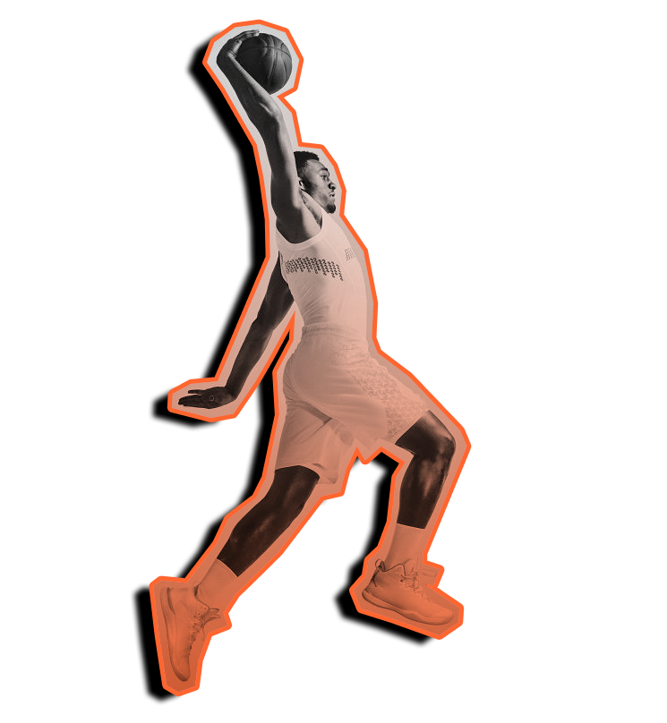

<div class="side-image-container">
  
</div>

<div class="vertical-container">
  <div class="timer-container">Timer</div>
  <div class="question-container">
      <div class="question">1989 NBA Playoffs - Game 5 between the Chicago Bulls and Cleveland Cavaliers - Michael Jordan made what came to be known today as "The Shot". The Bulls were trailing by one point and had the ball with 3 seconds to go. Who did Jordan shoot over</div>
  </div>
  <div class="trivia-answer-container">
    <mat-grid-list cols="2" rowHeight="2:1">
      <mat-grid-tile>
        <button mat-flat-button>Answer 1</button>
      </mat-grid-tile>
      <mat-grid-tile>
        <button mat-flat-button>Eric Musselman</button>
      </mat-grid-tile>
      <mat-grid-tile>
        <button mat-flat-button>Answer 3</button>
      </mat-grid-tile>
      <mat-grid-tile>
        <button mat-flat-button>Answer 4</button>
      </mat-grid-tile>
    </mat-grid-list>
  </div>
</div>
